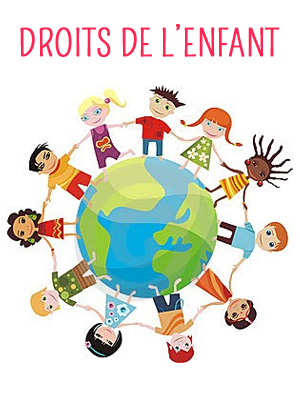

compétences informatiques :
Python
Javascript
Angular
Latex
Git / Github
HTML CSS
SQL
Linux
compétences transverses :
Organisation
Relation Client
Analyse des besoins
Travail en équipe
Capacité à communiquer
Interdisciplinarité
initiative
Logique
Qualités :
Rigoureux
Bon relationnel
Esprit Logique
Curieux

Experiences professionnelles
Educateur spécialisé dans diverses structures de la protection de l’enfance
Ile de France, Rhône Alpe, Loire Atlantique
Travail en équipe
Gestions de projets ( vacances, créations de partenariats)
Gestions de groupes
Ecoute et Communication avec Partenaires ( parents, services sociaux, associations, milieu méd
lieu culturel)
Analyse et réponses à diverses problématiques
Participation à des groupes de travail ( Analyses internes, Amélioration de service, Audits )
Méthodologies organisationnelles ( gestions de crises, d’urgences et anticipations de problème